Projetos Sociais
Projeto 1 — Voluntários
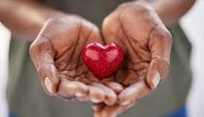
Projeto 2 — Caridade
Projeto 3 — Doação
Projeto 4 — Comunidade
 Projeto 5 — Reciclagem
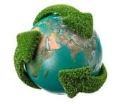
Projeto 6 — Meio Ambiente
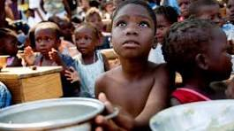
Projeto 7 — Fome
Projeto 8 — Educação
Projeto 9 — Saúde Pública
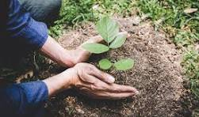
Projeto 10 — Reflorestamento
Projeto 5 — Reciclagem
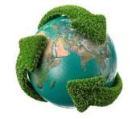
Projeto 6 — Meio Ambiente
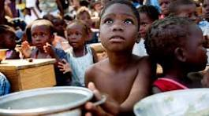
Projeto 7 — Fome
Projeto 8 — Educação
Projeto 9 — Saúde Pública
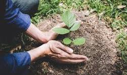
Projeto 10 — Reflorestamento
 Projeto 11 — Impacto Social
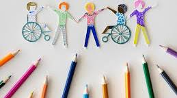
Projeto 12 — Inclusão
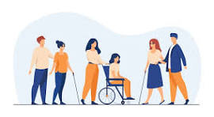
Projeto 13 — Suporte ao PCD
Projeto 14 — Comunidade Rural
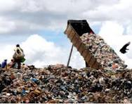
Projeto 15 — Lixo Urbano
Projeto 16 — Resgate de Animais
Projeto 17 — Voluntariado
Projeto 18 — Idosos
Projeto 19 — Necessitados
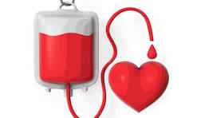
Projeto 20 — Doação de Sangue
Projeto 11 — Impacto Social
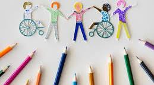
Projeto 12 — Inclusão
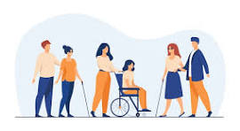
Projeto 13 — Suporte ao PCD
Projeto 14 — Comunidade Rural
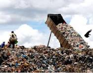
Projeto 15 — Lixo Urbano
Projeto 16 — Resgate de Animais
Projeto 17 — Voluntariado
Projeto 18 — Idosos
Projeto 19 — Necessitados
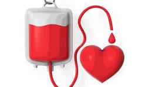
Projeto 20 — Doação de Sangue